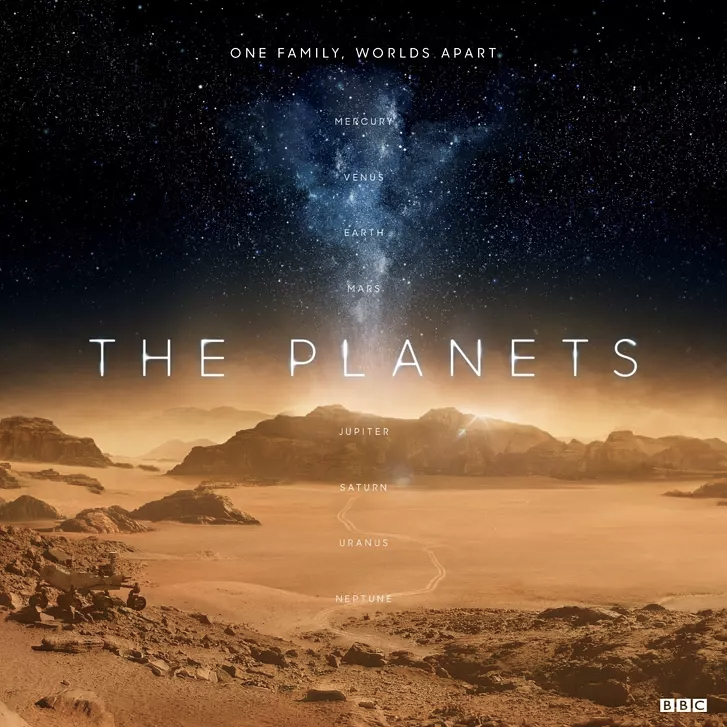

<?xml version="1.0" encoding="UTF-8"?>
<rss version="2.0"
xmlns:content="http://purl.org/rss/1.0/modules/content/"
xmlns:dc="http://purl.org/dc/elements/1.1/"
xmlns:slash="http://purl.org/rss/1.0/modules/slash/"
xmlns:atom="http://www.w3.org/2005/Atom"
xmlns:wfw="http://wellformedweb.org/CommentAPI/">
<channel>
<title>毒奶博主丨欢迎使用代理访问本站。 - BBC纪录片</title>
<link>https://limbopro.xyz/tag/BBC纪录片/</link>
<atom:link href="https://limbopro.xyz/feed/tag/BBC%E7%BA%AA%E5%BD%95%E7%89%87/" rel="self" type="application/rss+xml" />
<language>zh-CN</language>
<description></description>
<lastBuildDate>Sun, 21 Jul 2019 23:51:00 +0800</lastBuildDate>
<pubDate>Sun, 21 Jul 2019 23:51:00 +0800</pubDate>
<item>
<title>行星 The Planets (2019)</title>
<link>https://limbopro.xyz/archives/1381.html</link>
<guid>https://limbopro.xyz/archives/1381.html</guid>
<pubDate>Sun, 21 Jul 2019 23:51:00 +0800</pubDate>
<dc:creator>毒奶</dc:creator>
<description><![CDATA[行星在线观看-BBC纪录片奈菲影视：https://www.nfmovies.com/detail/?35571.html主理人序在各大公众号头条都有看到，恢弘场面，英式解说，BBC出品。The...]]></description>
<content:encoded xml:lang="zh-CN"><![CDATA[
<p></p><h2>行星在线观看-BBC纪录片</h2><p>奈菲影视：<a href="https://www.nfmovies.com/detail/?35571.html">https://www.nfmovies.com/detail/?35571.html</a></p><h2>主理人序</h2><p>在各大公众号头条都有看到，恢弘场面，英式解说，BBC出品。</p><p><a href="../../../usr/uploads/2019/07/939472034.mp3">The Void</a> BGM<br><audio src="../../../usr/uploads/2019/07/939472034.mp3" controls="controls"><br></audio></p>
]]></content:encoded>
<slash:comments>0</slash:comments>
<comments>https://limbopro.xyz/archives/1381.html#comments</comments>
<wfw:commentRss>https://limbopro.xyz/feed/archives/1381.html</wfw:commentRss>
</item>
</channel>
</rss>